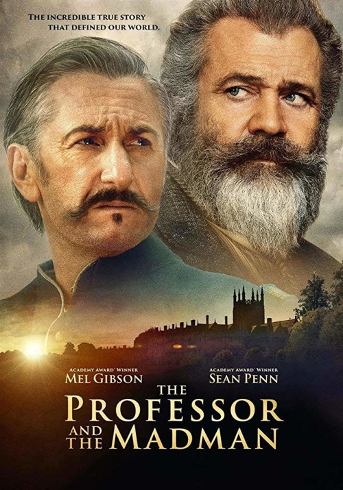

Однажды в Голливуде
Лос-Анджелес, лето 1969 года. Бывшая звезда телешоу Рик Далтон и его приятель-дублер Клифф Бут ищут способ пробиться
в большое кино. Тем временем неподалеку от них преступная «семья», возглавляемая музыкантом-убийцей Чарли Мэнсоном,
переходит от сатанистских ритуалов к кровавым расправам над людьми.
Узнать больше |
Игры разумов

Англия середины XIX века. Оксфордский профессор Джеймс Мюррей работает над первым в истории словарем английского
языка, а его главным соратником становится заключенный психиатрической клиники для особо опасных преступников -
доктор Уильям Майнор. Гений Майнор или сумасшедший, хитроумный преступник, ведущий дерзкую игру, чтобы вырваться на
свободу, или одержимый ученый? И кто тогда Мюррей: верный друг, жертва манипуляции или организатор сговора?
Узнать больше |